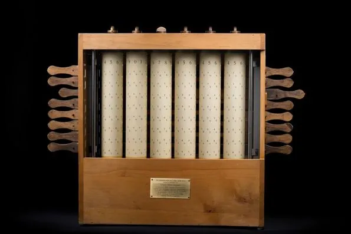
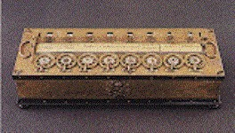
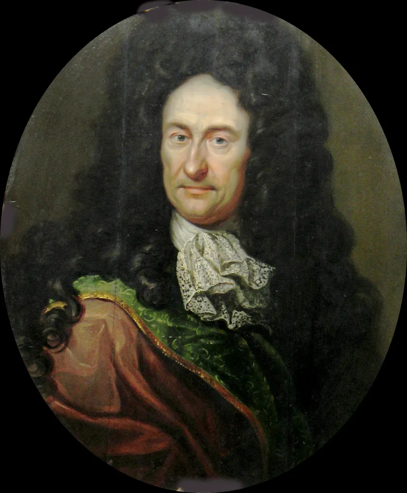
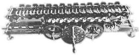
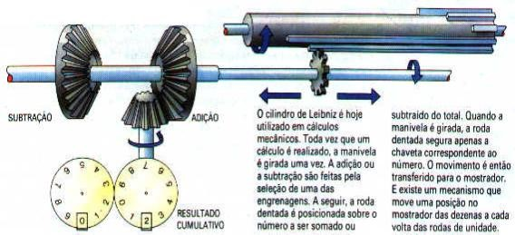
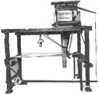
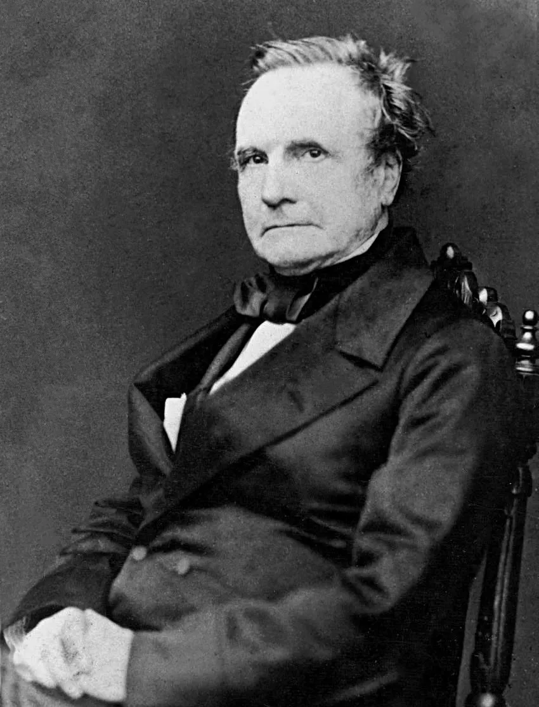
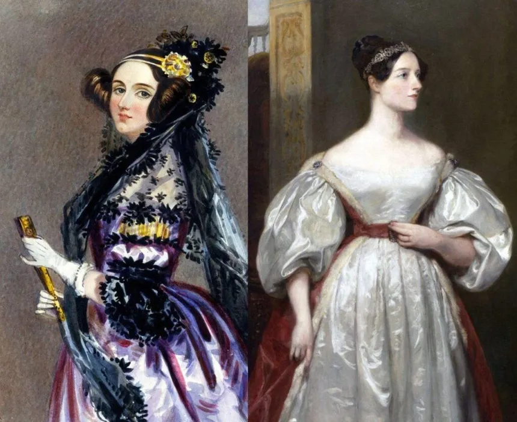
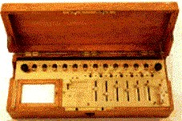

Em torno de 1623, Whilhelm Schickard construiu uma calculadora mecânica capaz de multiplicar através do método sucessivo de soma. Somente em 1957 que a existência desta calculadora tornou-se conhecida.

Em 1642, Blaise Pascal, filósofo, físico e matemático francês, aos 18 anos,desenvolveu uma máquina de calcular,para auxiliar o trabalho de contabilidade,baseada em pequenos discos. A máqui- na utilizava o sistema decimal para os seus cálculos de maneira que quando um disco ultrapassava o valor 9, retor-nava ao valor 0 e aumentava uma uni-dade no disco imediatamente superior.A máquina de calcular ficou conhecidacomo Pascaline e foi a primeira calculadora mecânica do

mundo, apenas somava e subtraia, embora Pascal ter construído cerca e 50 versões a sua comercialização não foi satisfatória, devido ao seu funcionamento ser pouco confiável. Ainda se encontram no comércio as máquinas de calcular, descendentes da Pascaline.

O matemático alemão, Gottfried Wilhelm von Leibnitz aprimorou a Pascaline criando um modelo capaz também de multiplicar, dividir e extrair raízes quadradas, através de adições e subtrações sucessivas, obtendo a Calculadora Universal de Leibnitz, também conhecida como Máquina de Leibnitz. Em 1673, ficou pronta a calculadora mecânica, que se distinguia por possuir três elementos significativos. A porção aditiva era, essencialmente, idêntica à da Pascaline, mas Leibniz incluiu um componente móvel e uma manivela manual, que ficava ao lado e acionava uma roda dentada - ou, nas versões posteriores, cilindros - dentro da máquina. Este mecanismo funcionava, com o componente móvel, para acelerar as adições repetidas envolvidas nas operações de multiplicação e divisão.
A própria repetição tornava-se automatizada. Desta forma a máquina era capaz de fazer conversão entre as várias moedas europeias da época. Pode-se mesmo dizer que talvez tenha sido esta a principal motivação de Leibnitz em construir esta máquina pois seu pai era contador.

Na época as subdivisões das moedas não seguiam a base decimal e os cálculos de conversão eram árduos. Imagine-se por exemplo a Inglaterra, com a Libra dividida em 20 schillings, e cada shilling em 12 pence, mas ainda tendo uma guinee valendo 21 shillings! Quanto seria em dólar, se 1 dólar fosse 1/2 guinee, 5 shillings e 3 pence, um terno que custasse 5 guinee, 2 shillings e 9 pence? Bom isto é fácil, mas se a outra moeda não fosse o dólar, mas também dividida de modo análogo? Não causa admiração saber que a mãe de Leibnitz foi acusada de manter relações sexuais com o Diabo e presa pela Santa Inquisição, só tendo escapado devido a que seu marido, pai de Leibnitz era muito influente e respeitado.


Em 1802, Joseph Marie Jacquard (1752-1834) mecânico francês, sugeriu controlar teares por meio de cartões perfurados que forneceriam comandos necessários para a tecelagem de padrões complicados em tecidos. Podendo ser considerada como a primeira máquina mecânica programada. Os princípios de programação por cartões perfurados foram demonstrados por Bouchon, Falcon e Jaques entre 1725 e 1745.


Charles Babbage (1792-1871), matemático e engenheiro inglês e professor da Universidade de Cambridge, analisando os erros contidos nas tabelas matemáticas, construiu um modelo para calcular tabelas de funções (logarítmicas, trigonométricas, etc.) sem o comando do operador humano, que apenas iniciava a cadeia de operações e a máquina calculava, preparando a tabela desejada. Esta máquina recebeu o nome de Máquina das diferenças, baseava-se no princípio de discos giratórios e era operada por uma simples manivela. Em 1823, o governo britânico financiou a construção de uma nova versão e Babbage teve que desenhar peças e ferramentas, atrasando o desenvolvimento do projeto de uma máquina de 7 registros e 20 caracteres cada, além dos resultados impressos, mas em 10 anos se tinha apenas uma máquina de 3 registros e 6 caracteres. Em 1830, Babbage projetou com o auxílio de Augusta Ada Byron, condessa de Lovelace e filha de Lord Byron, a primeira mulher na história do processamento de dados a criar programas de computador no mundo, que também era matemática e compreendeu o funcionamento da máquina analítica e escreveu sobre o processo da mesma, uma máquina muito mais geral que a de diferenças, que possuía unidade de controle de memória aritmética de entrada e de saída. Sua operação era comandada por um conjunto de cartões perfurados onde o desenvolvimento dos cálculos poderia ser modificado com o salto dos cartões de acordo com cada resultado dos cálculos intermediários.
Essa máquina recebeu o nome de máquina analítica, mas Babbage apesar de ter investido toda a fortuna da família e trabalhado anos na sua construção, veio a falecer em 1871 sem findar a sua construção, hoje estas peças se encontram em museus. Devido os trabalhos nos testes da Máquina Analítica de Babbage, Ada Lovelace é considerada a primeira programadora de computadores.
Em Londres, no Museu Nacional de Ciência e Indústria
encontram-se algumas das primeiras máquinas e calculadoras
que apareceram no mundo.
Clique na máquina de Babbage para ser levado
ao site do museu de Londres.

Em 1820, Charles Xavier Thomas de Colmar (1785-1870), da França, projetou e construiu uma máquina capaz de efetuar as quatro operações aritméticas básicas: a ARITHMOMETER. Esta foi a primeira calculadora realmente comercializada com sucesso tendo sido comercializadas mais de 200 exemplares. Ela fazia multiplicações com o mesmo princípio da máquina de Leibnitz e com a assistência do usuário efetuava as divisões.